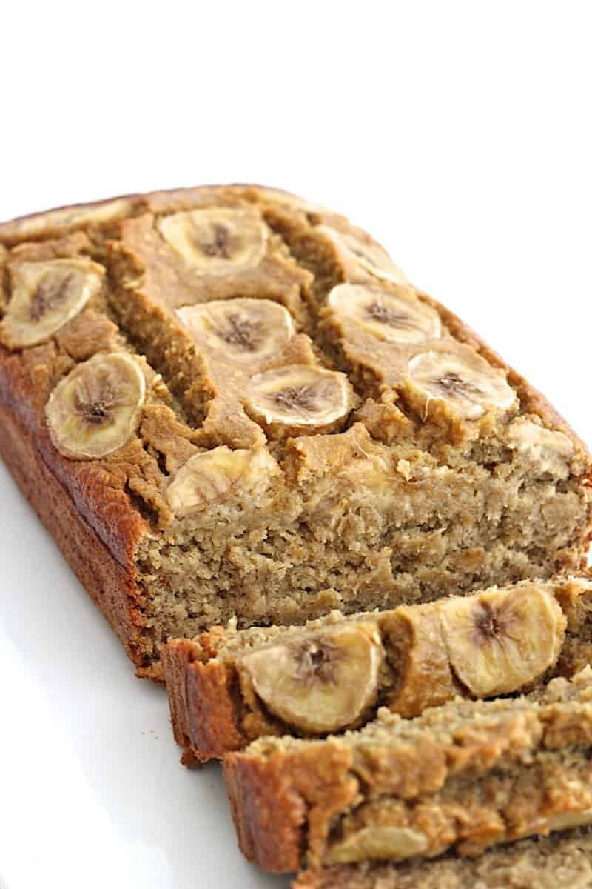

Banana Bread!

Description
A super mosit and recipe for Banana Bread! This recipe uses six bananas! Quick, Easy & Ready to share. Follow the steps below and make this recipe your own.
Ingredients
- 3 cups sugar
- 1 cup margarine, softened
- 1 teaspoon vanilla extract
- 4 eggs
- 3 ½ cups all-purpose flour
- 2 teaspoons baking soda
- ¼ teaspoon salt
- 1 cup buttermilk
- 6 very ripe bananas, mashed
Steps
- Preheat oven to 325 degrees F OR 165 C. Lightly grease a 9x13 inch baking pan
- In a large bowl, cream together the sugar and margarine until light and fluffy. Stir in th eggs one at a time, beating well with each addition! Then stir in the vanilla.
- In another large bowl, sift together flour, baking soda and salt. Blend this mixture into the egg micture, alternatively with the buttermilk. Stir just to combine. Fold in the mashed bananas; mixing just enough to evenly combine. Pour batter into prepared pan.
- Bake in preheated oven until a toothpick inserted into center of the loaf comes out clean! About 60 minutes.
- Enjoy